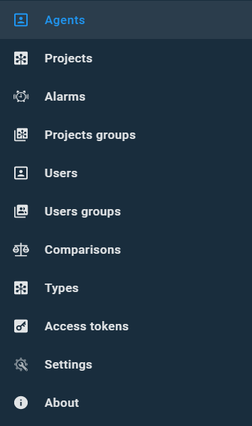
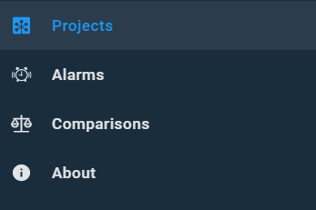

Portal navigation panel#
Overview of the Portal navigation panel
Navigation panel is a pop-up menu that allows to move from one section of the Portal to another. To activate navigation panel click the menu button on the header's left.

The navigation panel is a list of sections available to a user. On the image above, you see the Portal administrator's view. The navigation panel for a regular user contains less amount of sections.

Parent topic: Portal interface overview